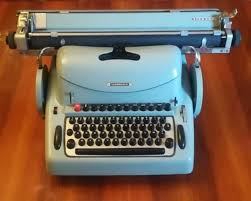

The Lexikon 80

The Lexikon 80 is a famous mechanical typewriter realized by Olivetti.
It was designed in 1950 by the architect and designer Marcello Nizzoli.
There were three versions
- The first series: beige bodywork; keys with metal circles and slides
- The second series: beige bodywork; small buttons in black resin
- The third series: bodywork in beige or blue; physiological buttons black or gray or colored
When it was produced
The Lexikon 80 was born in 1950
Popularity
The Lexikon 80 was a famous typewriter, well known in Italy, seven hundred and eighty thousand lexikon 80 were produced. There was a poster that advertised it.
Dimension
Lexikon 80 has a base of 45 cm, is 38 cm high and 24 cm wide
Purpose of use
it was used for writing
Style
the keyboard consisted of 45 keys and the car body of a single color.
Age of users
It could be used by anyone who purchased it therefore from both young and adults
Differences
1950 typewriters used a lot of ink and were heavy,
the elders had difficulty using them
while today they have become very digitized and hav
e a modern design and are accessible to all ages.
Kind of technology
It Is an electromechanical technology which had as its purpose to optimize the structure and
shape in order to obtain a resistant yet compact, light and harmonious body.
Price
Its price now, in perfect condition, is 99 euros.
Time spent using it
It was mainly an office machine and for this reason it was used to perform jobs that could last
even hour.
An Interview
Here is a small interview with my grandmother:
a) Grandmother do you know the lexikon 80?
b) yes,I do.
a) What is the lexikon 80?
9 2IB
b) It Is a famous typewriter produced by Olivetti.
a) Did you use it?
b) No, but an old friend has used it.
a) Ok thank you.